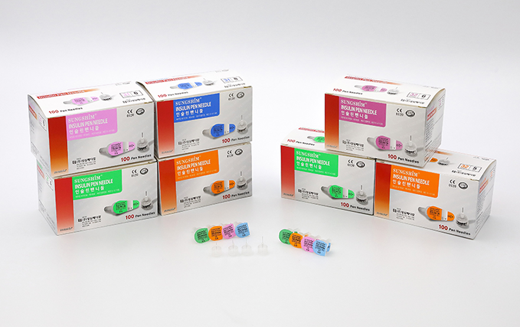

Insulin Pen Needles
Sungshim insulin pen needles are disposable sterile devices designed for accurate and controlled insulin administration using pen-type injectors. Engineered for consistency and ease of use, they support reliable delivery across daily insulin therapy.
Designed to meet clinical requirements, these pen needles provide stable performance in both healthcare and home care environments.

- Manufactured in accordance with international standards
- Micro-needle design for reduced injection discomfort
- Produced through automated processes for consistent quality
- Available in multiple sizes to suit different patient needs
- Sterilized using EO gas for safety
- Made in Korea
| Gauge | Needle Length |
|---|---|
| 32G | 4 mm |
| 32G | 5 mm |
| 32G | 6 mm |
| 31G | 8 mm |
A. Preparations Before Use
1) The user must fully understand the purpose of use, usage instructions, and precautions.
2) Check the product for any damage; do not use the product if the packaging is damaged or if there are any abnormalities.
3) Be sure to check the product's expiration date; do not use the product if the expiration date has passed.
4) Since this product is sterile, it must be opened immediately before use.
B. Method of Use
1) Remove the sterile label attached to the sterile cap.
2) Attach the pen needle straight to the pen-type syringe and rotate it to the right to assemble it.
3) Disinfect the injection site with an alcohol swab.
4) Remove the protective cap and needle cap, and gently press the plunger of the pen-type syringe to check if the needle is clogged.
5) Adjust the dosage (Unit) of the pen-type insulin syringe according to the doctor's prescription.
6) Inject at a 90-degree angle into the designated injection site.
7) After injection, place the protective cap on the needle and remove it from the pen-type syringe by rotating it to the left.
8) Dispose of the removed product safely.
C. Storage and Management Method After Use:
This product is for single use only and must be disposed of after a single use. Reuse is prohibited.
(1) Do not use products with detached or damaged sterilization paper.
(2) This product is sterilized, so it must be opened immediately before use.
(3) Do not use this product for purposes other than its intended use.
Sterile needle used to inject drugs or aspirate bodily fluids into the human body
- Shelf Life: 3 years from the date of manufacture
- Available sizes: 32G 4 mm, 32G 5 mm, 32G 6 mm, and 31G 8 mm
- Storage Conditions: Store at room temperature; avoid exposure to direct sunlight, heat, and humidity
Note: This is a medical device. Please read all instructions and safety guidelines carefully before use.